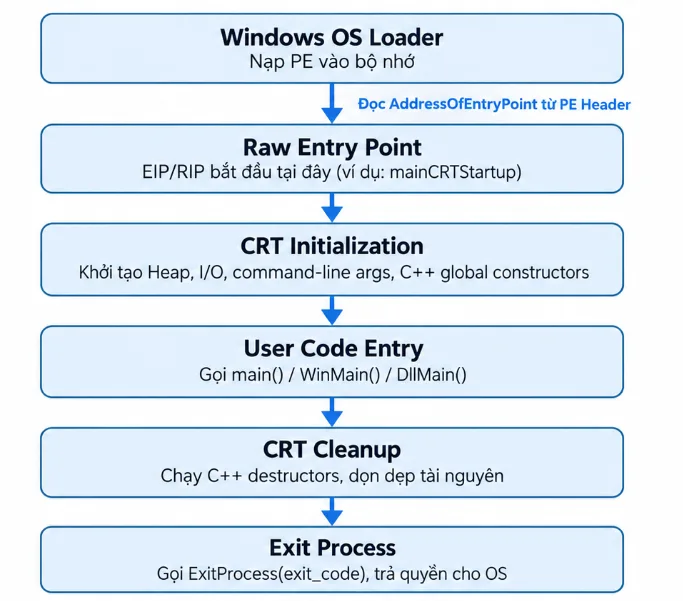
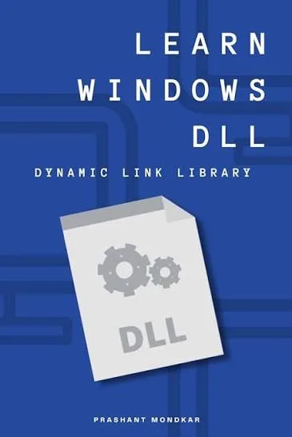
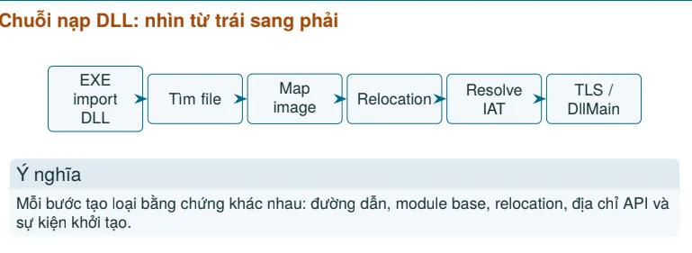

Malware for Beginners: Phần 1 — Bộ nhớ · Phần 2 — PE · Phần 3 · Phần 4 — Shellcode
Nhan_laptop
Tiếp tục với section tiếp theo
- Entry Point → CRT → WinMain — hiểu chương trình bắt đầu và tiếp tục chạy thế nào.
- Imports, IAT và exports — chương trình tìm và gọi hàm trong DLL ra sao.
- Quyền bộ nhớ và ASLR — R/W/X, DEP, VirtualProtect, địa chỉ có thể thay đổi.
- Shellcode và XOR — mã máy chạy trong tiến trình; XOR dùng để biến đổi rồi khôi phục byte.
- Reverse engineering/debugging — IDA đọc lệnh, CFF đọc PE, HxD sửa byte; debugger kiểm tra lúc chạy.
Entry Point → CRT → WinMain — hiểu chương trình bắt đầu và tiếp tục chạy thế nào.
Entry Point
Nó là RVA của địa chỉ đầu tiên mà Windows bắt đầu thực thi sau khi PE được load vào memory. Microsoft mô tả đây là địa chỉ entry point tương đối với ImageBase; với executable thì đây chính là starting address.
EntryPoint VA = ImageBase + AddressOfEntryPoint
Trong chương trình C/C++ build bình thường bằng MSVC, entry point thường trỏ vào một hàm startup do C Runtime (CRT) cung cấp.
CRT nằm giữa Entry Point và WinMain
CRT Là một thành phần cốt lõi của hệ điều hành Windows (đặc biệt từ Windows 10 và các bản cập nhật).
Cung cấp các hàm C tiêu chuẩn (Standard C Library):
- Quản lý bộ nhớ: malloc(), free(), calloc(), realloc()
- Thao tác chuỗi và bộ nhớ: strcpy(), strlen(), memcpy(), memset()
- Vào/ra dữ liệu (I/O): printf(), scanf(), fopen(), fread(), fwrite()
- Toán học & Tiện ích: sin(), cos(), abs(), rand(), qsort(), exit()
Trước khi hàm main - winmain chạy, crt sẽ thực hiện công việc khởi tao: thiết lập bảng phân công bộ nhớ (heap), thiết lập các biến môi trường, xử lý các đối tượng toàn cục và thiết lập các luồng nhập tiêu chuẩn.
Các bản CRt đã và đang được phát triển như:
- static/dynamic CRT truyền thống (MSVCRxx.dll):
- các file như msvcrt.dll, msvcr100.dll, msvcr120.dll.
- Universal C Runtime - UCRT:
- Bắt đầu từ Windows 10 và Visual Studio 2015, Microsoft tái cấu trúc CRT thành UCRT - ucrtbase.dll.
- UCRT là một thành phần chính thức của Windows OS, được cập nhật tự động qua Windows Update
Với Windows GUI application, flow điển hình là:
AddressOfEntryPoint -> WinMainCRTStartup ->CRT initialization -> WinMain(...)-> Your application code
Winmain
với mọi chương trình Windows gồm các hàm entry-point tên là winmain hoặc là wWinmain.
Cả hai hàm đều có cú pháp chuẩn như sau:
int WINAPI wWinMain(
HINSTANCE hInstance, // Handle quản lý Instance của ứng dụng
HINSTANCE hPrevInstance, // Luôn luôn là NULL trong Windows 32-bit/64-bit
PWSTR lpCmdLine, // Tham số dòng lệnh (Unicode)
int nCmdShow // Trạng thái hiển thị cửa sổ ban đầu
);
- HINSTANCE hInstance: con trỏ quản lý đại diện cho file .exe của ứng dung khi nạp vào bộ nhớ, Windows dùng nó để xác định tài nguyên thuojc về ứng dụng.
- HINSTANCE hPrevInstance: dùng trên window 16 bit để kiểm tra xem chương trình đã có phiên bản nào đnag chạy chưa. Trên các hệ điều hành win32/64 hiện nay, tham số ny bằng null.
- PWSTR lpCmdLine: Chuỗi chứa các tham số dòng lệnh được truyền vào khi mở ứng dụng.
- cuối cùng: cờ chỉ định hiển thị cửa số chính khio mở ứng dụng.
chương trình bắt đầu và tiếp tục chạy thế nào

Imports, IAT và exports — chương trình tìm và gọi hàm trong DLL ra sao.
Import
Import thể hiện thư viện và API mà image khai báo sử dụng.
Nhóm API có thể gợi ý thao tác tệp, process, mạng, registry hoặc bộ nhớ.
Import cho biết khả năng/phụ thuộc, không chứng minh API chắc chắn đã được gọi.
DLL

DLL - Dynamic Link Library là các file chứa mã, dữ liệu hoặc tài nguyên (hình ảnh, giao diện...) mà nhiều chương trình trên Windows có thể chia sẻ và sử dụng cùng một lúc.
- DLL có thể là dependency được khai báo trong Import Directory.
- DLL cũng có thể được yêu cầu trong runtime bởi cơ chế nạp động.
- Loader có thể nạp dependency của DLL theo chuỗi nhiều tầng.
- Một module chỉ xuất hiện trong process sau khi được ánh xạ và khởi tạo phù hợp.
Không thấy tên DLL trong import table không chứng minh DLL không bao giờ được sử dụng.

1. tìm DLL cần nạp
- Loader xác định tên DLL và các dependency.
- Việc tìm file phụ thuộc tên, đường dẫn, cấu hình và ngữ cảnh process.
- Khác biệt 32-bit/64-bit có thể dẫn tới DLL khác nhau.
- Nhà phân tích ghi lại đường dẫn tuyệt đối, hash, chữ ký và kiến trúc.
Import table cho biết yêu cầu; filesystem và module list cho biết file thực tế được dùng.
- Lưu ý: DLL search order và nguy cơ nạp nhầm: Search order là quy tắc hệ thống dùng để tìm file DLL khi tên file chưa xác định bằng đường dẫn tuyệt đối:
- Thứ tự tìm kiếm phụ thuộc cơ chế gọi và cấu hình Windows.
- Một DLL cùng tên ở vị trí ưu tiên không phù hợp có thể bị chọn nhầm.
- Đây là nền tảng để hiểu DLL search-order hijacking ở mức nhận diện.
2: map DLL vào address space
- Loader tạo các mapping tương ứng với sections của DLL.
- Image base ưu tiên có thể khác địa chỉ nạp thực tế.
- Mỗi section nhận kích thước và quyền phù hợp.
- Module base giúp quy đổi RVA của DLL sang VA trong process.
3: relocation của DLL
- DLL có preferred ImageBase.
- Nếu địa chỉ đã được sử dụng, DLL được nạp ở base khác.
- Relocation entries điều chỉnh tham chiếu cần thiết.
- Nhà phân tích dùng module base + RVA để xác định VA.
4: resolve symbol và API
- DLL cung cấp hàm qua Export Directory.
- EXE/DLL yêu cầu hàm qua Import Directory.
- Loader ghép yêu cầu với địa chỉ export tương ứng.
- Địa chỉ được ghi vào vùng liên quan tới Import Address Table.
- Import theo tên và theo ordinal có cách nhận diện khác nhau.
IAT - Import Address Table
IAT chứa các địa chỉ mà image dùng để gọi hàm được cung cấp bởi module khác sau khi liên kết.
- Trước resolve, entry có thể chưa là địa chỉ hàm cuối cùng.
- Sau resolve, lệnh gọi gián tiếp có thể đi qua IAT.
- IAT giúp nối disassembly với API và module cung cấp API.
- IAT không phải nhật ký số lần API được gọi.
Quyền bộ nhớ và ASLR — R/W/X, DEP, VirtualProtect, địa chỉ có thể thay đổi.
Quyền bộ nhớ R / W / X
| Quyền | Ý nghĩa |
|---|---|
R |
Read — được đọc |
W |
Write — được ghi |
X |
Execute — CPU được phép thực thi code |
RW |
đọc + ghi |
RX |
đọc + thực thi |
RWX |
đọc + ghi + thực thi |
DEP - Data Execution Prevention / NX — Data không là code
Nếu DEP/NX được áp dụng, cố thực thi code từ PAGE_READWRITE có thể dẫn đến access violation. Microsoft mô tả PAGE_READWRITE là vùng đọc/ghi và khi DEP bật thì việc execute vùng đó không được phép.
Là cơ chế bảo mật kết hợp giữa phần cứng (CPU) và phần mềm (OS) nhằm ngăn chặn mã độc chạy từ các vùng bộ nhớ vốn chỉ dùng để chứa dữ liệu (như Stack hoặc Heap)
Một vùng nhớ chỉ nên có quyền Write hoặc Execute, không bao giờ được có cả hai cùng lúc r+w+x.
VirtualProtect()
Windows cho phép chương trình thay đổi quyền của một vùng memory trong runtime:
VirtualProtect(
address, //địa chỉ con trỏ bắt đầu
size, // kích thước vùng nhớ
newProtection, //Quyền mới
&oldProtection // biến lưu quyền cũ
);
ASLR - Address Space Layout Randomization.
Cơ chế ngẫu nhiên hóa địa chỉ nạp của các thành phần chương trình (Stack, Heap, các file DLL, Executable) mỗi khi ứng dụng hoặc hệ thống khởi động.
Ngăn chặn các đòn tấn công khai thác bộ nhớ dựa trên địa chỉ cố định (như Buffer Overflow, Return-to-libc, ROP chain).
Cách hoạt động:
- Nếu không có ASLR: Hàm system() trong kernel32.dll luôn nằm ở địa chỉ cố định (ví dụ: 0x7C812345). Hacker chỉ cần ghi đè địa chỉ này để chiếm quyền kiểm soát.
- Khi có ASLR: Mỗi lần chạy, địa chỉ của kernel32.dll sẽ bị xáo trộn (ví dụ: lần 1 là 0x7FF8..., lần 2 là 0x7FF9...).
references
- https://learn.microsoft.com/en-us/cpp/build/reference/entry-entry-point-symbol
- https://learn.microsoft.com/en-us/cpp/c-runtime-library/crt-initialization
- https://learn.microsoft.com/en-us/windows/win32/learnwin32/winmain--the-application-entry-point
- https://learn.microsoft.com/en-us/windows/win32/dlls/about-dynamic-link-libraries
- https://techcommunity.microsoft.com/discussions/windows-security/turn-on-mandatory-aslr-in-windows-security/1186989
- https://learn.microsoft.com/en-us/windows/win32/api/memoryapi/nf-memoryapi-virtualprotect